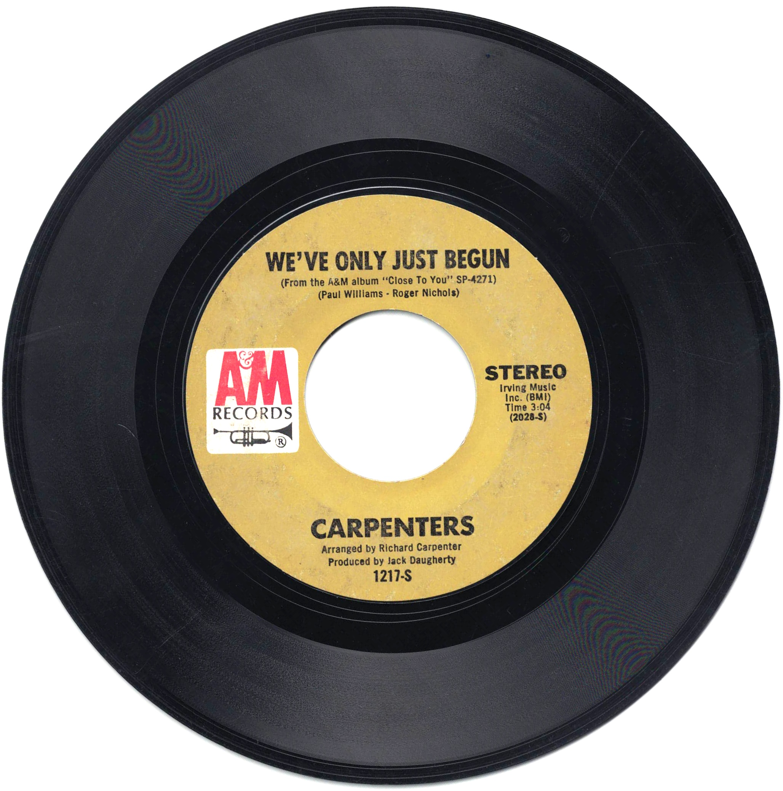

Product No. HEC-0107
$4.95
Shipping: $8.95
Description
45 RPM, 7-inch single
Full Description
The Carpenters were an American pop duo consisting of siblings Karen Carpenter and Richard Carpenter. Formed in the late 1960s, they became one of the most successful recording acts of the 1970s, known for polished arrangements, memorable melodies, and Karen Carpenter's distinctive contralto voice. Their breakthrough came with "(They Long to Be) Close to You," which reached No. 1 on the Billboard Hot 100 in 1970. They followed with a long series of hits including "We've Only Just Begun," "Rainy Days and Mondays," "Superstar," "Top of the World," "Yesterday Once More," and "Please Mr. Postman." Richard Carpenter handled much of the arranging, composing, and production, while Karen was both the group's lead vocalist and an accomplished drummer. The Carpenters developed a smooth pop sound that blended elements of soft rock, easy listening, and traditional vocal pop. Their recordings were especially noted for layered harmonies and carefully crafted studio production. Karen Carpenter died in 1983 at age 32. Richard Carpenter later continued to preserve and promote the duo's musical legacy through reissues, performances, and archival projects. The Carpenters remain one of the defining pop acts of the 1970s, and their recordings continue to be widely recognized for their vocal quality, emotional warmth, and sophisticated arrangements.
Condition
Good condition